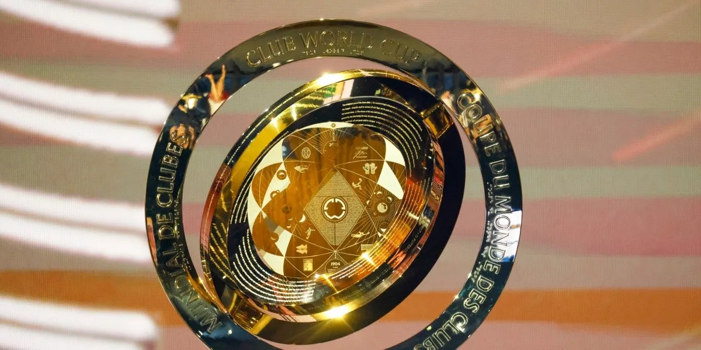

Sobre o Super Mundial
O Super Mundial de Clubes é uma nova versão do antigo Mundial de Clubes da FIFA. A primeira edição está prevista para 2025, nos Estados Unidos. Diferente do formato anterior, que reunia apenas sete clubes, o novo torneio contará com 32 times de todos continentes, seguindo um modelo parecido com o da Copa do Mundo de seleções.
Serão clubes campeões e vice-campeões das principais competições continentais, como a Libertadores da América, a Liga dos Campeões da Europa, a Liga dos Campeões da Ásia, entre outras. O objetivo da FIFA é aumentar o prestígio do torneio e atrair mais audiência global.
O Super Mundial será disputado de quatro em quatro anos, e promete reunir os melhores clubes do mundo em uma competição mais equilibrada e atrativa.